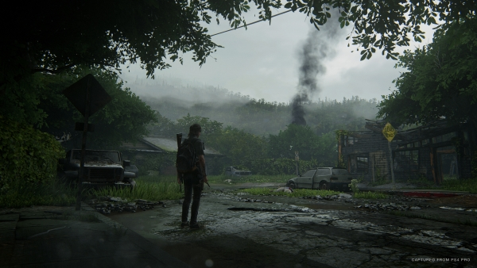

The Last of Us Part II ismertető
A The Last of Us II egy 2020 - as akció-kalandjáték, amelyet a Naughty Dog fejlesztett ki,
és amelyet a Sony Interactive Entertainment adott ki a PlayStation 4-hez .
A The Last of Us (2013)után öt évvel játszódó játék két játszható karakterre összpontosítegy
poszt-apokaliptikus Egyesült Államokban, akiknek az élete összefonódik: Ellie-vel , aki bosszút
áll egy tragédia után, és Abby-re , aki belekeveredik milíciája és egy vallási kultusz közötti konfliktusban. A játékot harmadik személy
szemszögéből nézzük és lehetővé teszi a játékos számára, hogy lőfegyverekkel, rögtönzött fegyverekkel és lopakodással harcolhasson emberi ellenségekkel és kannibalisztikus zombi-szerű lényekkel.

A The Last of Us Part II-ben Ellie felett vehetjük át az irányítást egy újabb izgalmas
és fordulatos történet keretein belül, amelyben ismét lehetőségünk nyílik részt venni
fedezékalapú harcokban, őrült kalandokban, miközben felfedezhetünk egy elragadó, ám veszélyekkel
teli poszt-apokaliptikus világot.